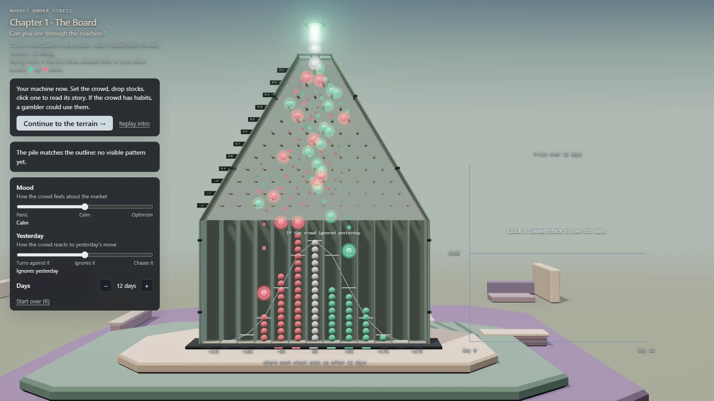
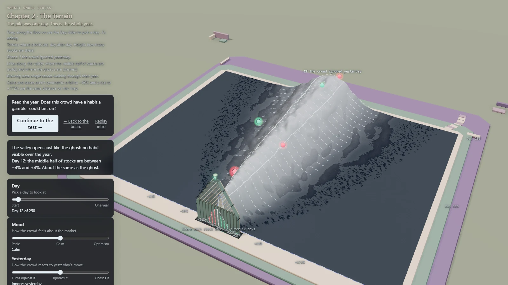
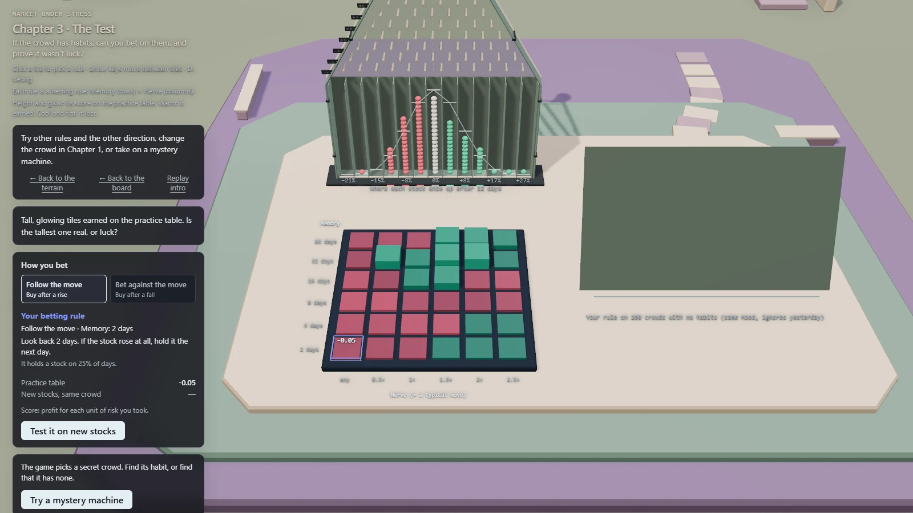
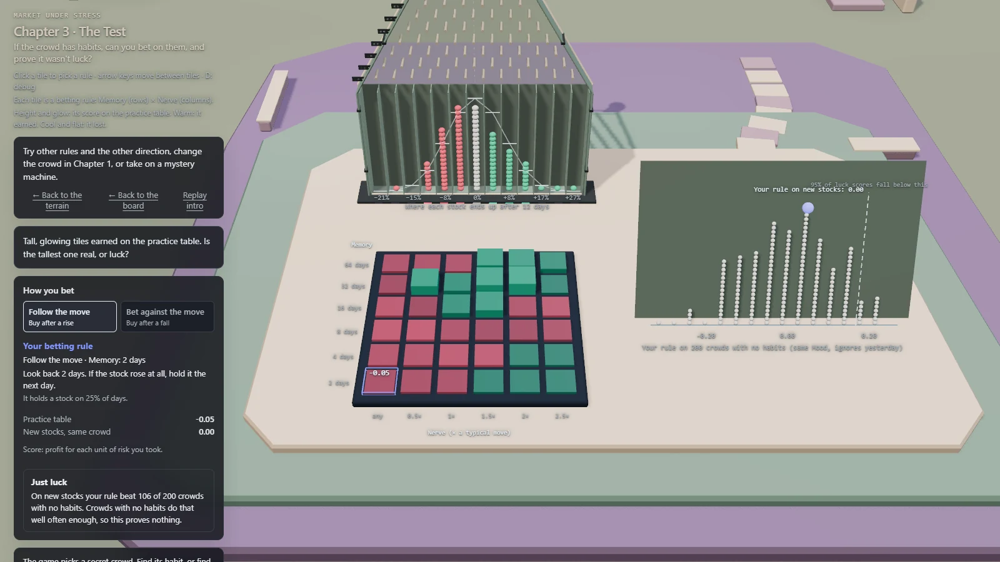

An interactive experiment with market patterns
Quant Analysis (Market Pinball)
Market Pinball turns a simulated market into a Galton board: each ball represents a stock, and each row of pegs represents a trading day. Across the Board, the Terrain, and the Test, it asks whether a trading rule finds a repeatable pattern or simply fits the data already in view.
- Interactive Web App
- Quantitative Analysis
- 3D
Live demo: desktop browsers with WebGL support only. Mobile devices are not currently supported.

01 / The interface
A market inside a pinball machine
The board looks like pinball, but its paths come from a seeded market model rather than physical collisions. Mood changes the market’s upward tendency; Yesterday changes how strongly a stock follows or reverses its previous move.
The Terrain extends that view across 250 trading days, showing how the distribution of stocks changes over time alongside a comparison crowd that ignores yesterday.

02 / Trading rules
Build a rule, then put it to the test
Choose whether to follow a move or bet against it, then configure Memory (how far back the rule looks) and Nerve (the size of move needed to act). A 6 × 6 table compares these settings for the chosen direction on 100 practice stocks.
Rules hold a stock or stay out of the market. Each decision uses the history available at that point and applies to the following day, keeping future prices out of the decision.

03 / Results
Tuned results meet new data
After selecting a rule on the practice data, test the same settings on 100 newly generated stocks from the same market model. This out-of-sample comparison uses fresh paths rather than a later historical period: it shows whether the tuned practice score carries over to unseen synthetic data.
A further check runs the rule against 200 random-market batches with the same Mood but no dependence on yesterday. Practice and fresh-stock scores are compared with this luck baseline, including its 95th percentile. Scores use annualized Sharpe calculated from the simulated strategy returns.

04 / Implementation
Model, analysis, and 3D
TypeScript implements the market model and backtesting logic; Three.js renders the 3D interface, and Vite builds the browser app. The project includes Vitest tests for the model and interactions.
All market data is synthetic. The app runs entirely in the browser without a backend or API keys; the results explore behavior within the simulated model rather than performance on real historical market data.
Explore